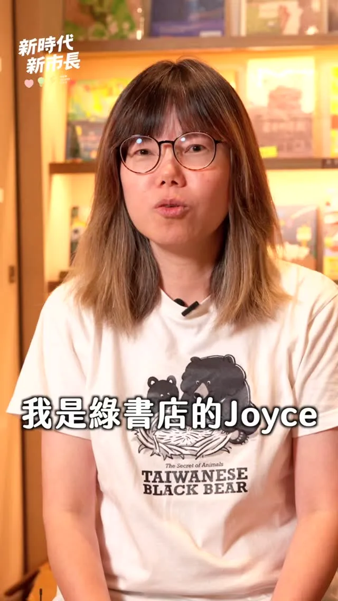

蘇巧慧su.chiaohui
@su.chiaohui:「敢去就有路。」 就像金曲歌后米莎在〈腳跡〉中的歌詞一樣，我們從一開始宣布參選新北市長，到今天最後倒數90天，我和大家一路一起前進，也越來越多人站出來和我們並肩前行。 最後階段，我們一起衝，一起帶領新北市迎接新時代。
Accounts
| 平台 | 帳號 | 已收錄貼文 | 最後更新 |
|---|---|---|---|
| 官網 | https://chiao.tw/ | 27 | 2026-08-27 00:00 |
| https://www.facebook.com/chiaohui.su | 93 | 2026-08-30 15:28 | |
| https://www.instagram.com/su.chiaohui/ | 97 | 2026-08-28 17:32 | |
| YouTube | https://www.youtube.com/channel/UCBybqVtDU2YgADc8tBqUz5A | 64 | 2026-08-28 18:30 |
| LINE 官方帳號 | http://line.me/ti/p/%40suchiaohui | 0 | — |
| Threads | https://www.threads.com/@su.chiaohui | 130 | 2026-08-30 15:55 |
| Podcast | https://open.spotify.com/show/06fXdjNXspAe1QLML8EsAv | 5 | 2026-08-27 15:00 |
Timeline
顯示 416 / 416 則
@su.chiaohui:「敢去就有路。」 就像金曲歌后米莎在〈腳跡〉中的歌詞一樣，我們從一開始宣布參選新北市長，到今天最後倒數90天，我和大家一路一起前進，也越來越多人站出來和我們並肩前行。 最後階段，我們一起衝，一起帶領新北市迎接新時代。
@su.chiaohui:9/5（六）新北競選總部正式成立 做伙來挺巧慧！ 謝謝每位市民朋友這一路來的支持與鼓勵，讓我更有動力繼續向前衝。 現在，我想邀集所有希望新北進步的力量，一起迎接新時代、打造更好的新北市！ 9月5日，誠摯邀請大家來板橋第一運動場，和 @william_chingte 賴清德總統、 @tsai_ingwen 蔡英文小英總統，以及 @chenchimai 陳其邁市長一起，共同見證我的新北競選總部正式成立！ 現場還有金曲歌后詹雅雯，以及大家熟悉的《 #粉紅超跑》林姍帶來精彩演出，歡迎各位好朋友一起共襄盛舉，為巧慧加油！ 新北市的下一步，需要我們並肩同行。 讓新世代扛起新時代，2026新北慧贏！ 2026蘇巧慧新北競選總部成立大會 📅 9/5（六）14:30進場 📍 板橋第一運動場運動廣場（板橋區漢生東路278號）

@su.chiaohui:今天我和 @hou.yuih 侯友宜市長、@realeliotyli 李宇翔議員一起前往視察國道1號五股、林口交流道改善工程。感謝中央大力支持新北交通建設，兩項工程中央一共挹注✨80億元！ 去年十月，五股交流道北出匝道就已經提前通車，在中央、地方大力合作、第一線施工團隊日夜努力之下，北入匝道也預計在今年十月✨提前半年通車！未來可由台65線直接高架銜接國道1號，大幅緩解在地居民的塞車之苦。 大家關心的「林口交流道改善工程」也在全力推進中，未來隨著國1南下主線拓寬、匝道增設、箱涵立體化，分流車輛外也降低事故風險，行車更順暢安全！ 中央、地方一起努力，一步步打造更便捷完整的新北交通路網！

「巧志工」熱烈招募中！✨ 走過一場又一場的活動，每次站上舞台，最讓我安心的，永遠是場邊那群默默忙碌的志工身影。 這群巧志工夥伴們陪我穿梭新北各區，是因為大家和我一樣對新北充滿期待！ 剩下不到一百天的時間，我們需要更多夥伴，一起衝刺，為彩色的新北努力！ 誠摯邀請你加入「巧志工」，一起讓新北因你而改變。 🔗 巧志工熱血登記表單： https://forms.gle/RtzN8XVeMhNv1bs27 🔔歡迎到我的臉書，直接點擊連結！

TEAM TAIWAN 拓荒探險隊第三彈角色曝光！ 猜猜看這次登場的是誰？沒錯，就是大家最熟悉的 #水獺媽媽✨ 這次我和民進黨的縣市長候選人們化身「TEAM TAIWAN 拓荒探險隊」，和大家走遍全台各地。水獺媽媽帶著大聲公和滿滿裝備出發，一起從淡江大橋、野柳一路探索到九份，把新北的交通建設、山海美景、特色老街通通走一遍！ 新北有山、有海，更有29區各自精彩的地方特色。未來，我要推動 #新皇冠海岸、#鑽石山城 觀光政見，整合山海、老街、商圈、漁港等豐富資源，打造屬於新北自己的觀光品牌，讓更多國內外旅客愛上新北市，也讓市民以自己的城市為榮。 從交通、產業、觀光，到居住環境、教育和照顧，我會繼續帶著「溫暖、創新、會做事」的精神，用創新方法打造更好的新北市，讓建設持續進步、生活品質一起升級。 下一個登場的會是哪位角色呢👀 一起期待接下來的驚喜吧！

@su.chiaohui:和 @pumashen 沈伯洋、@hunglutw 張宏陸、@fanyunig 范雲一起在鶯歌國民運動中心打匹克球！

Revitalizing Commercial Districts: Boosting the New Taipei Automotive Industry!
【仔細觀察自己的優勢，用真誠的語言推薦自己，就可以提高打動別人的機會喔】 適讀年齡：6歲以上 ✏️ 本集台語小教室路、街、巷子、死巷 《我可以做你的狗狗嗎？》文圖： 特洛伊．卡明斯 小狗阿飛為了找一個家，寫了一封又一封的信。你很快就會發現，隨著對象不同，阿飛在信中口吻也不一樣。面對一封封回信，有些人很友善，有些不太客氣，但無論是何種挫折，阿飛仍然堅持到底。猜猜看，最後到底是誰會收養阿飛呢？ 故事由上誼文化授權使用 👇 繪本這裡看：https://www.books.com.tw/products/0010996055? 👇 更多親子大小事，請在 FB 搜尋： 水獺媽媽巧慧與她的小夥伴 https://www.facebook.com/ottermamachiao 👇 寫信給水獺媽媽：100925 立法院郵局 第 27 號信箱 水獺媽媽收

「眼神散發光芒的人，可以打造幸福城市。」 永和在地獨立書店綠書店 Green Bookstore店長Joyce 提到蘇巧慧： 「她為孩子念故事時，眼神真的散發光芒。」 Joyce說，蘇巧慧的團隊真的讓人感到幸福，相信蘇巧慧一定可以讓新北成為更幸福、美麗的城市。

@su.chiaohui:開學前夕，我特別穿上無塵衣，走進汐止的食家安 團膳廚房，一一觀察從環境清潔、食材挑選、烹煮到供餐的過程，也和現場許多團膳業者交流，瞭解實務狀況與需求。 今年年初，我就提出✨免費營養午餐的政見。未來我擔任市長，會持續精進校園供餐品質，並結合✨食農教育，讓孩子在吃飯的過程中，更認識新北這片土地。 我也會推動✨3章1Q擴大實施，向上延伸到高中職、向下延伸到幼兒園，讓全新北的師生都吃得更在地、更安全！ 同時，感謝團膳業者照顧師生的健康，未來市府要✨照顧照顧者，透過補助食安設備升級、持續推動食安智慧監控系統，以最高標準守護新北孩子的飲食安全！

敢去就有路！巧慧帶大家一起迎接新時代！ 非常感謝今天爆場的客家鄉親給我支持和力量，更感謝金曲歌后 米莎 Misa特別到現場獻唱 ，給我祝福。 在米莎的金曲 #腳跡 中有一句歌詞「敢去就有路。」聽了真的特別有感觸。從一開始宣布參選新北市長，到今天最後倒數90天，我和大家一起前進，也越來越多人站出來和我們並肩前行。 今天我和大家報告我們的客家政見： ✅廣入校園社區，推廣客語及技藝課程 ✅擴大辦理 #客家信仰文化活動，挹注客家文史團體和地方社團 ✅媒合產業 #跨域合作，舉辦以客家為主體的商展和影展 ✅盤點低利用公有空間，提供客家青年更多新創孵育基地 ✅結合新科技，打造 #客家文化AI資料庫、#新北AI客語學習平台 ✅擴大 #伯公照護站設置，#客家幣使用範圍 最後階段，我們一起拚，一起讓新北市迎接新時代！

@su.chiaohui:週六行程滿檔！打造新北觀光品牌 活絡商圈老街經濟！

[Otter Mom's Little Talks] Can I Be Your Dog? | Adopt Don't Shop | Animal Friendly | Children's P...

「巧志工」熱烈招募中！✨ 走過一場又一場的活動，每次站上舞台，最讓我安心的，永遠是場邊那群默默忙碌的志工身影。 這群巧志工夥伴們陪我穿梭新北各區，是因為大家和我一樣對新北充滿期待！ 剩下不到一百天的時間，我們需要更多夥伴，一起衝刺，為彩色的新北努力！ 誠摯邀請你加入「巧志工」，一起讓新北因你而改變。 🔗 巧志工熱血登記表單： https://forms.gle/RtzN8XVeMhNv1bs27

TEAM TAIWAN 拓荒探險隊第三彈角色曝光！ 猜猜看這次登場的是誰？沒錯，就是大家最熟悉的 #水獺媽媽✨ 這次我和民進黨的縣市長候選人們化身「TEAM TAIWAN 拓荒探險隊」，和大家走遍全台各地。水獺媽媽帶著大聲公和滿滿裝備出發，一起從淡江大橋、野柳一路探索到九份，把新北的交通建設、山海美景、特色老街通通走一遍！ 新北有山、有海，更有29區各自精彩的地方特色。未來，我要推動 #新皇冠海岸、#鑽石山城 觀光政見，整合山海、老街、商圈、漁港等豐富資源，打造屬於新北自己的觀光品牌，讓更多國內外旅客愛上新北市，也讓市民以自己的城市為榮。 從交通、產業、觀光，到居住環境、教育和照顧，我會繼續帶著「溫暖、創新、會做事」的精神，用創新方法打造更好的新北市，讓建設持續進步、生活品質一起升級。 下一個登場的會是哪位角色呢👀 一起期待接下來的驚喜吧！

一起來打匹克球！ 我和 @pumashen 沈伯洋、@hunglutw 張宏陸、@fanyunig 范雲一起在鶯歌國民運動中心打匹克球！匹克球果然是適合全年齡的運動，我們在Allen教練的教導下立刻上手！ 我和沈伯洋也分別提出了各項運動政見，未來在新北市，我不只要 #確保各項運動場館及設備充足 ，我也要實施 #職場微型運動計畫 ，補助企業購入器材、開設課程，讓大家可以利用上班空檔運動。 同時，我也提出 #心理健康支持3加3方案 ，在現有衛福部的基礎上，再加碼三次免費心理諮商，讓大家身體、心理都健康！ 讓運動成為大家的日常，也要讓運動產業在新北繼續發展！

@su.chiaohui:這十年來，我和大家一起在新北打拚，因此最清楚大家的需要。 未來進到市政府，我會引入新觀念，繼續做大家最堅實的後盾！ 新時代、新市長，未來我不但會照顧產業，活絡新北的商業活動，帶動汽車產業再發展，也要持續匯聚各行各業的力量，讓產業與人才，都在新北發光發熱！

@su.chiaohui:「眼神散發光芒的人，可以打造幸福城市。」 永和在地獨立書店 @green_bookstore 綠書店店長Joyce 提到蘇巧慧： 「她為孩子念故事時，眼神真的散發光芒。」 Joyce說，蘇巧慧的團隊真的讓人感到幸福，相信蘇巧慧一定可以讓新北成為更幸福、美麗的城市。
Su Chiao-hui’s Eyes Light Up as She Builds a Happier, More Beautiful New Taipei!

開學前夕，我特別穿上無塵衣，走進 #汐止 食家安團膳廚房，一一觀察從環境清潔、食材挑選、烹煮到供餐的過程，也和現場許多團膳業者交流，瞭解實務狀況與需求。 今年年初，我就提出 #免費營養午餐 的政見。未來我擔任市長，會持續精進校園供餐品質，並結合 #食農教育，讓孩子在吃飯的過程中，更認識新北這片土地。 我也會推動 #3章1Q 擴大實施，向上延伸到高中職、向下延伸到幼兒園，讓全新北的師生都吃得更在地、更安全！ 同時，感謝團膳業者照顧師生的健康，未來市府要 #照顧照顧者，透過補助食安設備升級、持續推動食安智慧監控系統，以最高標準守護新北孩子的飲食安全！
9/5（六）新北競選總部正式成立 做伙來挺巧慧！ 謝謝每位市民朋友這一路來的支持與鼓勵，讓我更有動力繼續向前衝。 現在，我想邀集所有希望新北進步的力量，一起迎接新時代、打造更好的新北市！ 9月5日，誠摯邀請大家來板橋第一運動場，和 賴清德總統、 蔡英文 Tsai Ing-wen 小英總統，以及 陳其邁 Chen Chi-Mai市長一起，共同見證我的新北競選總部正式成立！ 現場還有金曲歌后 詹雅雯 Y.W ，以及大家熟悉的《 #粉紅超跑》 #林姍 帶來精彩演出，歡迎各位好朋友一起共襄盛舉，為巧慧加油！ 新北市的下一步，需要我們並肩同行。 讓新世代扛起新時代，2026新北慧贏！ 2026蘇巧慧新北競選總部成立大會 📅 9/5（六）14:30進場 📍 板橋第一運動場運動廣場（板橋區漢生東路278號）

週六行程滿檔！打造新北觀光品牌 活絡商圈老街經濟！ 今天都在新北跑透透！上午我來到淡水、八里和各區商圈協會的好朋友們請益，中午也前往「板橋扶輪家族九社聯合例會」，與扶輪社友們交流，敬佩大家投入國內外的公益服務、熱心做慈善的付出，也和大家分享我的市政願景。隨後又趕往金山參加「山海生活節」，用行動支持老街商圈，享用在地好吃的美食。 我也向商圈夥伴們報告，未來將以 #預算加倍 為目標，投入更多資源協助商圈行銷、轉型與發展，帶動商機與人潮！ ✅ 補助提升三倍 商圈補助從每年600萬元提高至1800萬元。 ✅ 優化軟硬體建設 改善人行空間、公共設施與大眾運輸規劃，打通前往商圈的最後一哩路。 ✅ 成立專家業師商圈總輔導團 協助商圈規劃特色、申請活動、改善設備，提升城市行銷與觀光效益。 ✅ 舉辦城市級特色活動 串聯商圈、景點與在地文化，讓新北各區有特色、每季有活動。 我會繼續努力，讓新北各區的商圈更熱鬧，也讓新北市珍貴的山海美景被更多人看見！

@su.chiaohui:「巧志工」熱烈招募中！✨ 走過一場又一場的活動，每次站上舞台，最讓我安心的，永遠是場邊那群默默忙碌的志工身影。 這群巧志工夥伴們陪我穿梭新北各區，是因為大家和我一樣對新北充滿期待！ 剩下不到一百天的時間，我們需要更多夥伴，一起衝刺，為彩色的新北努力！ 誠摯邀請你加入「巧志工」，一起讓新北因你而改變。 🔗 巧志工熱血登記表單： https://forms.gle/RtzN8XVeMhNv1bs27

Playing Pickleball with Shen Po-yang!

@su.chiaohui:TEAM TAIWAN 拓荒探險隊第三彈角色曝光！ 猜猜看這次登場的是誰？沒錯，就是大家最熟悉的「水獺媽媽」✨

一起來打匹克球！ 我和 台北 沈伯洋、張宏陸、范雲 FAN, Yun 一起在鶯歌國民運動中心打匹克球！匹克球果然是適合全年齡的運動，我們在Allen教練的教導下立刻上手！ 我和沈伯洋也分別提出了各項運動政見，未來在新北市，我不只要 #確保各項運動場館及設備充足 ，我也要實施 #職場微型運動計畫 ，補助企業購入器材、開設課程，讓大家可以利用上班空檔運動。 同時，我也提出 #心理健康支持3加3方案 ，在現有衛福部的基礎上，再加碼三次免費心理諮商，讓大家身體、心理都健康！ 讓運動成為大家的日常，也要讓運動產業在新北繼續發展！

這十年來，我和大家一起在新北打拚，因此最清楚大家的需要。未來進到市政府，我會引入新觀念，繼續做大家最堅實的後盾！ 針對新北汽車產業發展，我特別提出兩項具體主張： ✅ 舉辦「#新北汽車展」，串連在地商圈與影視音、遊戲、餐旅觀光等產業，開創多元商機。 ✅ 建立「#汽車銷售專業認證」，加深消費信任，提升成交機會。 #新時代 #新市長，未來我不但會照顧產業，活絡新北的商業活動，帶動汽車產業再發展，也要持續匯聚各行各業的力量，讓產業與人才，都在新北發光發熱！
「眼神散發光芒的人，可以打造幸福城市。」 永和在地獨立書店 #綠書店 店長Joyce 提到蘇巧慧： 「她為孩子念故事時，眼神真的散發光芒。」 Joyce說，蘇巧慧的團隊真的讓人感到幸福，相信蘇巧慧一定可以讓新北成為更幸福、美麗的城市。

巧觀點 活絡新北商業活動 汽車產業再發展 未來我不但會照顧產業，也要持續匯聚各行各業的力量，讓產業與人才，都在新北發光發熱！ 2026.08.27

開學前夕，我特別穿上無塵衣，走進 #汐止 食家安 團膳廚房，一一觀察從環境清潔、食材挑選、烹煮到供餐的過程，也和現場許多團膳業者交流，瞭解實務狀況與需求。 今年年初，我就提出 #免費營養午餐 的政見。未來我擔任市長，會持續精進校園供餐品質，並結合 #食農教育，讓孩子在吃飯的過程中，更認識新北這片土地。 我也會推動 #3章1Q 擴大實施，向上延伸到高中職、向下延伸到幼兒園，讓全新北的師生都吃得更在地、更安全！ 同時，感謝團膳業者照顧師生的健康，未來市府要 #照顧照顧者，透過補助 #食安設備升級、持續推動食安智慧監控系統，以最高標準守護新北孩子的飲食安全！